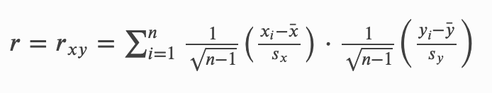
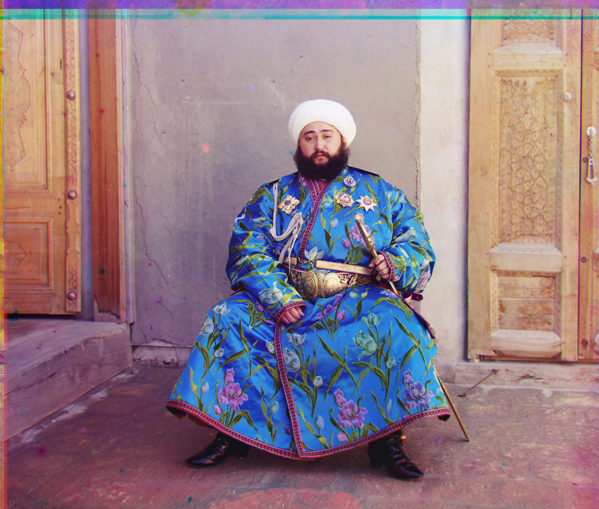

The goal of this project is to extract the three color channel images (R, G, B), place them on top of each other with an appropriate alignment using both exhaustive and pyramid implementation.

The Nomrmalized Cross Correlation is widely used for checking image similarity, and
it checks whether two datas contain a similar pattern of values. To implement the
formula above in terms of Python, we would first obtain the mean and standard deviation
of the two images we are about to align using np.mean and np.std. Since we can
extract the part regarding
sqrt(1.0 / (n-1)) from both coefficients, so that we can
multiply, np.sum, and then multiply the result by 1.0/(n-1).
Citation: https://xcdskd.readthedocs.io/en/latest/cross_correlation/cross_correlation_coefficient.html
For jpg files, which are lot smaller in file size, I've implemented an exhaustive algorithm to detect pixel offsets and align the three color channels appropriately. Firstly, I would crop the image by a fixed value of 20px to cut the black borders off. Then, the exhuastive algorithm would check in the range of [-15, 15] pixels, and search for the largest Nomralized Cross Correlation. I would first align green channel to blue channel and find the appropriate pixel offset of the green channel. Then, I would do the same for red channel to blue channel. Finally, I would stack all three channels into one colored image. Here are the results for the jpg files after alignment with their respective offsets.
cathedral.jpg | G: (2, 5), R: (3, 12)
monastery.jpg | G: (2, -3), R: (2, 3)
tobolsk.jpg | G: (3, 3), R: (3, 6)
The downside of the exhaustive method is that it takes too much time to process large image files such as tiff files. To fasten the process, we must rescale the image to a smaller pixel margins, such that alignment can be processed at a much faster rate. Firstly, I've cropped the image with a fixed value of 200px to remove the black borders. Then I've continuously rescaled the image by half per step and proceed 5 times, which would result in 1/32 of the original image size. Then, we would perform the exhaustive method on a smaller image, and come back to the greater version to check for the range of [offset * 2 ± 1]. Then, it will produce the correct offset.
Given Examples
church.tif | G: (4, 25), R: (-4, 58)
emir.tif | G: (24, 49), R: (-511, 126)
harvesters.tif | G: (16, 59), R: (13, 124)
icon.tif | G: (17, 40), R: (23, 89)
lady.tif | G: (8, 47), R: (11, 113)
melons.tif | G: (9, 82), R: (12, 178)
onion_church.tif | G: (26, 51), R: (36, 108)
self_portrait.tif | G: (28, 78), R: (36, 176)
three_generations.tif | G: (14, 53), R: (10, 111)
train.tif | G: (5, 42), R: (31, 87)
workshop.tif | G: (0, 52), R: (-12, 104)
Chosen Examples
kurmy.tif | G: (-18, 25), R: (-38, 115)
lugano.tif | G: (7, 55), R: (32, 120)
zakat.tif | G: (-41, 75), R: (-68, 114)
cathedral.jpg took 1.53 seconds
monastery.jpg took 1.61 seconds
tobolsk.jpg took 1.55 seconds
church.tif took 5.98 seconds
emir.tif took 5.66 seconds
harvesters.tif took 5.89 seconds
icon.tif took 6.06 seconds
lady.tif took 5.75 seconds
melons.tif took 6.06 seconds
onion_church.tif took 5.95 seconds
self_portrait.tif took 5.9 seconds
three_generations.tif took 6.15 seconds
train.tif took 6.1 seconds
workshop.tif took 6.13 seconds
kurmy.tif took 6.21 seconds
lugano.tif took 6.48 seconds
zakat.tif took 6.11 seconds
On average, the exhaustive method on jpg files took 1.56 seconds.
On average, the pyramid method on tif files took 6.03 seconds.
You probably realized that all my other photos look good except 'emir.tif'. Why is that? The reason why is because each color channels of the image don't necessarily have the same brightness value. In such case, we will use edge detection to consider such situations, and produce a better version. Here is the image produced before adding edge detection.
As you can see, the red channel of the image is far off to the left. However, with edge detection, this is not going to be an issue at all. Here, I will be utilizing Canny Edge Detector under skimage. It uses a filter based on the derivative of a Gaussian in order to compute the intensity of the gradients. Since skimage.feature.canny produces boolean values, we should multiply the values by 255 to convert into a grey scale. Then, we perform the pyramid implementation to align the image. The edge detection takes some time (around 5 more seconds), but it works like magic.
Red Edge of 'emir.tif'
Green Edge of 'emir.tif'
Blue Edge of 'emir.tif'

Combined Results of all three edge channels!